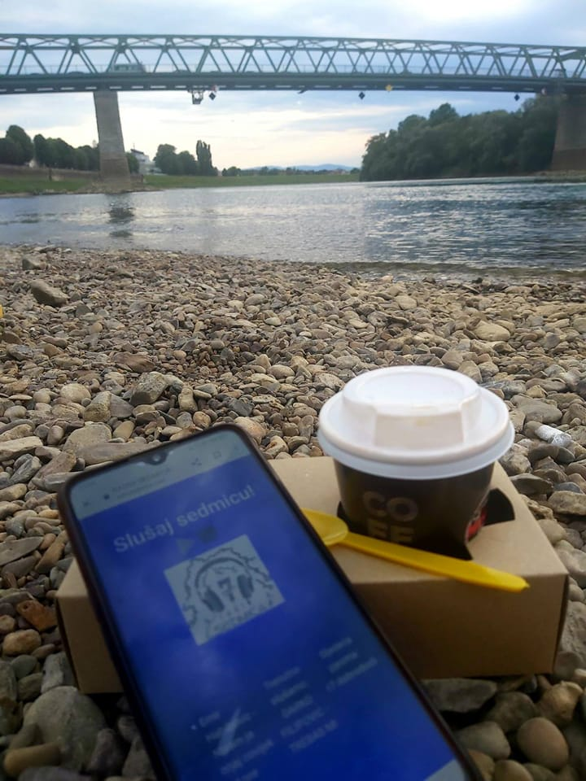
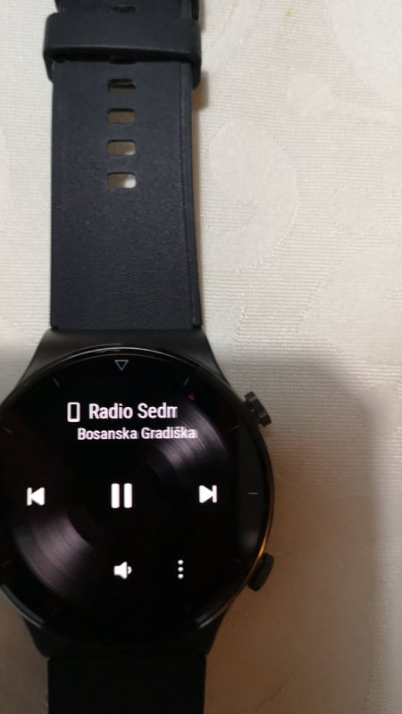
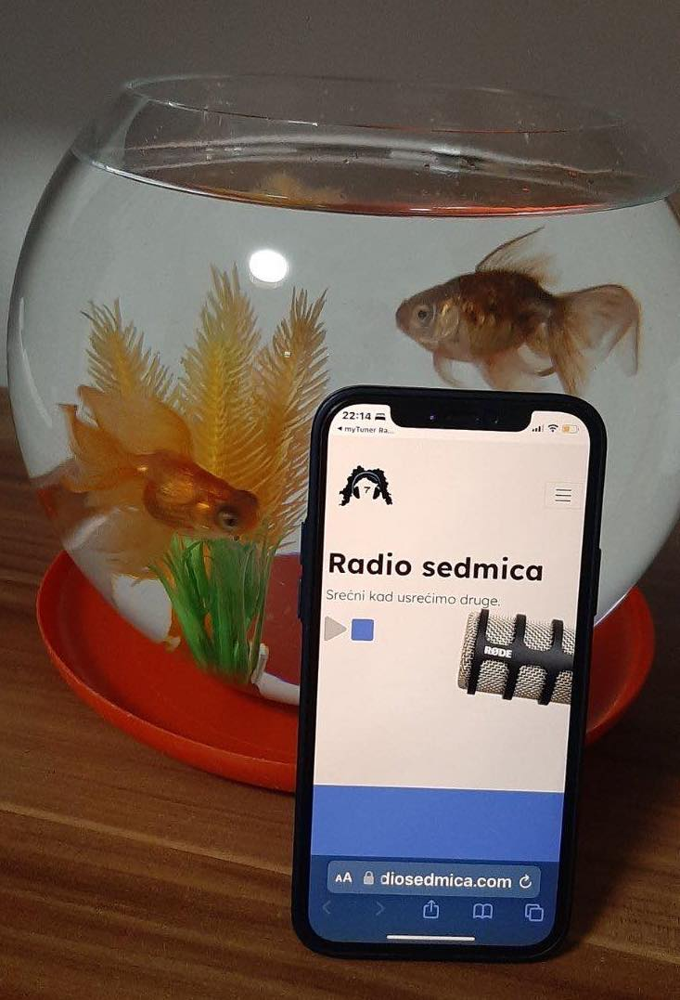

Radio sedmica
Srećni kad usrećimo druge.
"Ako riječ nije lijek,
nek bar ne bude ni otrov."
Treba li vam reklama?
Osmišljavam i pravim reklame u studiju Sedmica. Pišite na mail, ili facebook stranicu!
Kako me slušati?
Možete me slušati pomoću aplikacije My Tuner. A na facebook stranici Radio Sedmica možete da me kontaktirate, kao i da pratite moj rad
Drago mi je, ja sam Romana. Supruga sjajnog čovjeka (muzičara). Majka dva genijalca, u svakom smislu. Deda mi je svirao harmoniku, tata bubnjeve i sa muzikom sam i u genima i u srcu oduvijek. Odrasla uz ples, zvučne kutije, probe i mikrofon. Zaljubljena u radio od prvog dodira reglera na mikseti. Poslije skoro dvadeset godina rada na radio stanicama, na svim mogućim poslovima koji se tamo obavljaju, svoju ljubav pretočila sam u hobi - Online radio gdje svaki dan biram muziku, pravim špice, reklame, džinglove, i širim poruke. Uglavnom su to ili moje lične poruke ili čitam tekstove sjajnih pisaca. Sve ovo radim za svoj ćeif i za sve one ljude kojima prija muzika i lijepa riječ.
Slike slušalaca


